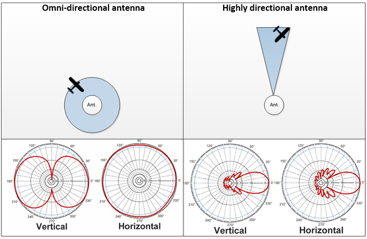

3. The type of antenna on the control and the type of antenna on the drone
This is where it gets interesting… In this section we’ll discuss the radiation pattern and gain of antennas.
Each antenna has a specific radiation pattern. Some antennas will broadcast (or receive) equally in all directions (in which case the radiation pattern is a sphere centred around the antenna) while other, highly directional, antennas will only transmit (or receive) in a narrow cone in front of them. A good example of a directional antenna is the typical TV aerial which needs to be pointed in the right direction to work.
The more directional an antenna is the higher its gain. A good analogy is comparing a household lightbulb (low directionality, short range) to a flashlight (high directionality, long range). Gain is measured in dB, with unidirectional antennas having typically 1-3dB and directional having usually 8-15dB.
The impact of gain is huge. For example, other things being equal, a 2dB antenna on 2.4GHz will give you a range of 6km while a 16dB Yagi antenna will increase this range to 33km.
The standard DJI antennas are low gain, meaning they receive broadly equally well in all directions.
The choice of radiation pattern depends on your style of flying (e.g. a long range flight in the same direction or a shorter range flight around the pilot) and your equipment (e.g. an antenna tracker will enable a directional antenna to always point to the plane).
In addition to directionality, examining the radiation patterns will reveal other considerations the pilot will need to take into account. For example, even unidirectional antennas typically have a doughnut shaped pattern, with a low-sensitivity area right above and below them. As such it is common for the video signal to be weak when flying directly over the pilot.
The following diagram provides an illustration of the differences between omni and directional antennas as well as two representative actual radiation patterns (“vertical”, as seen from the side and “horizontal”, as seen from above)

So, to summarize:
a) High gain antennas (with gain >2db) will provide great range when flying directly infront of it but really terrible range when flying behind it
b) Even the stock antennas have a weak spot right above the pilot, so be aware when flying directly overhead